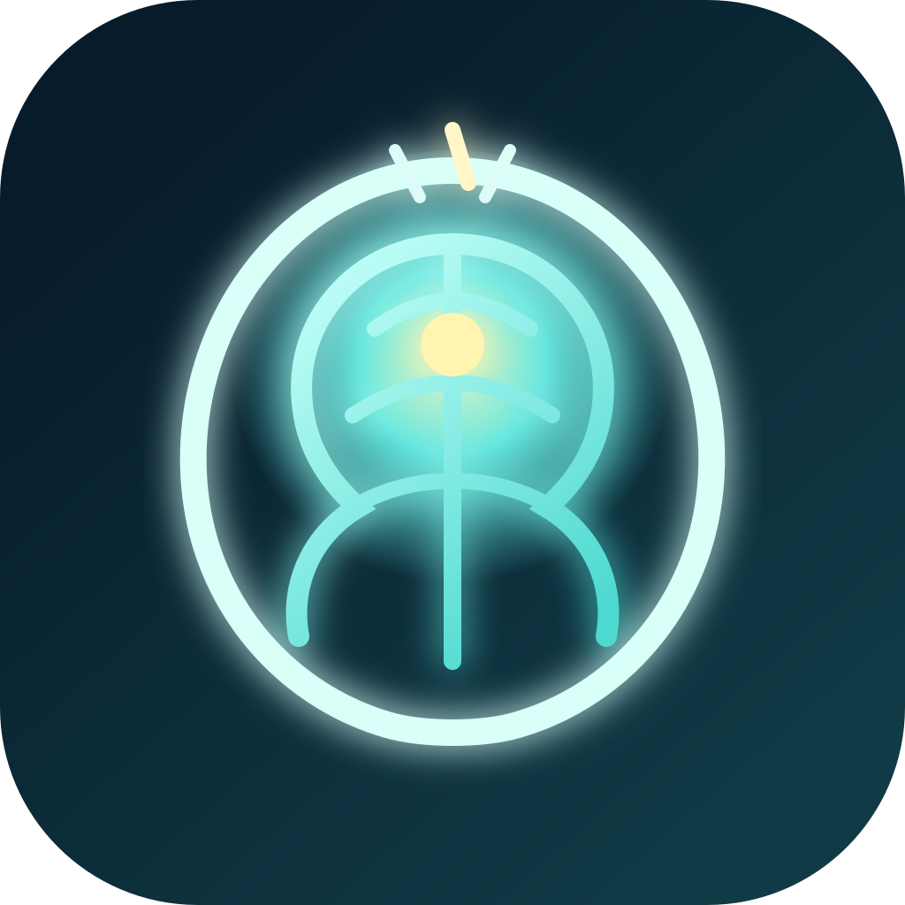
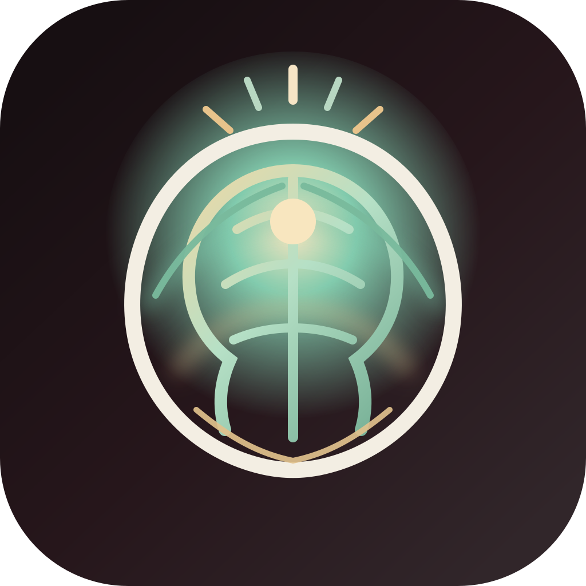
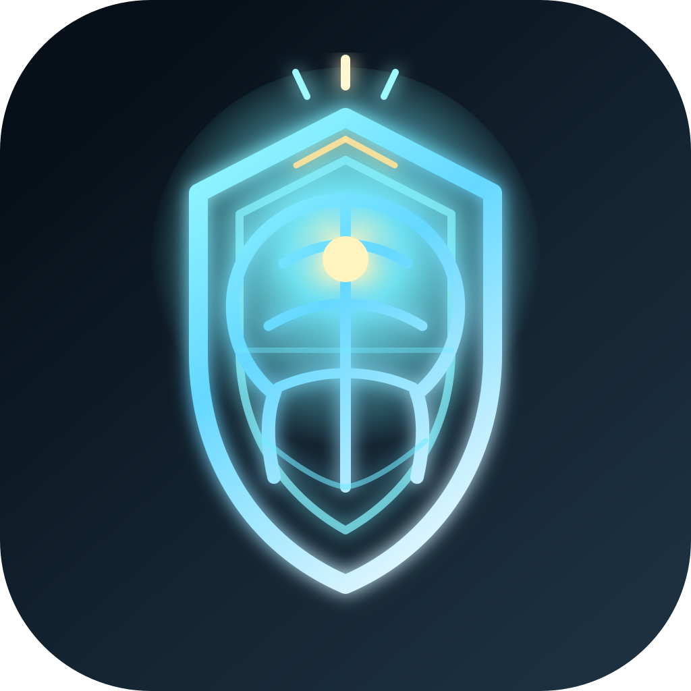
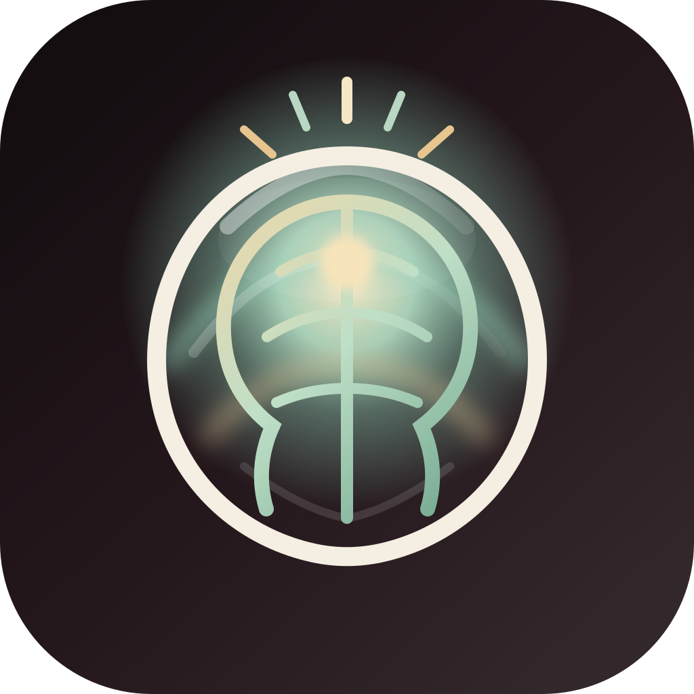
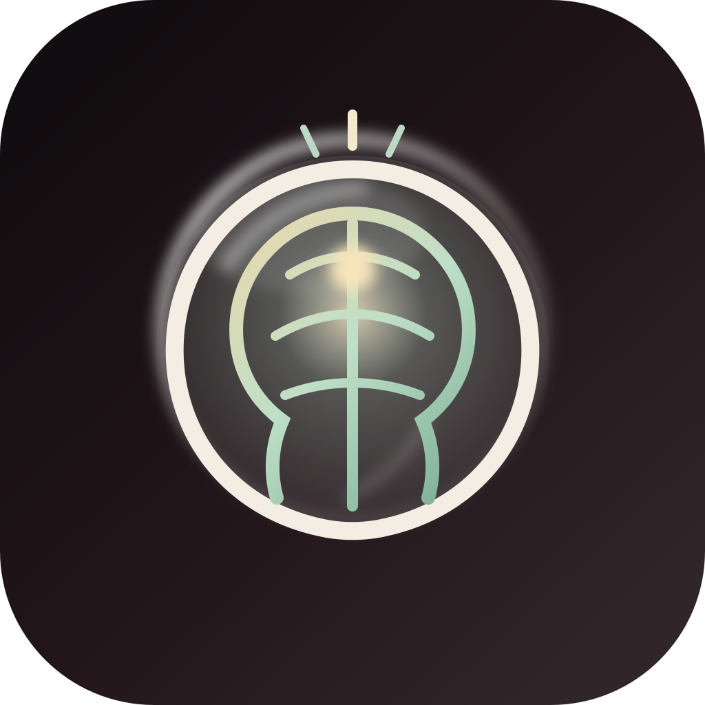
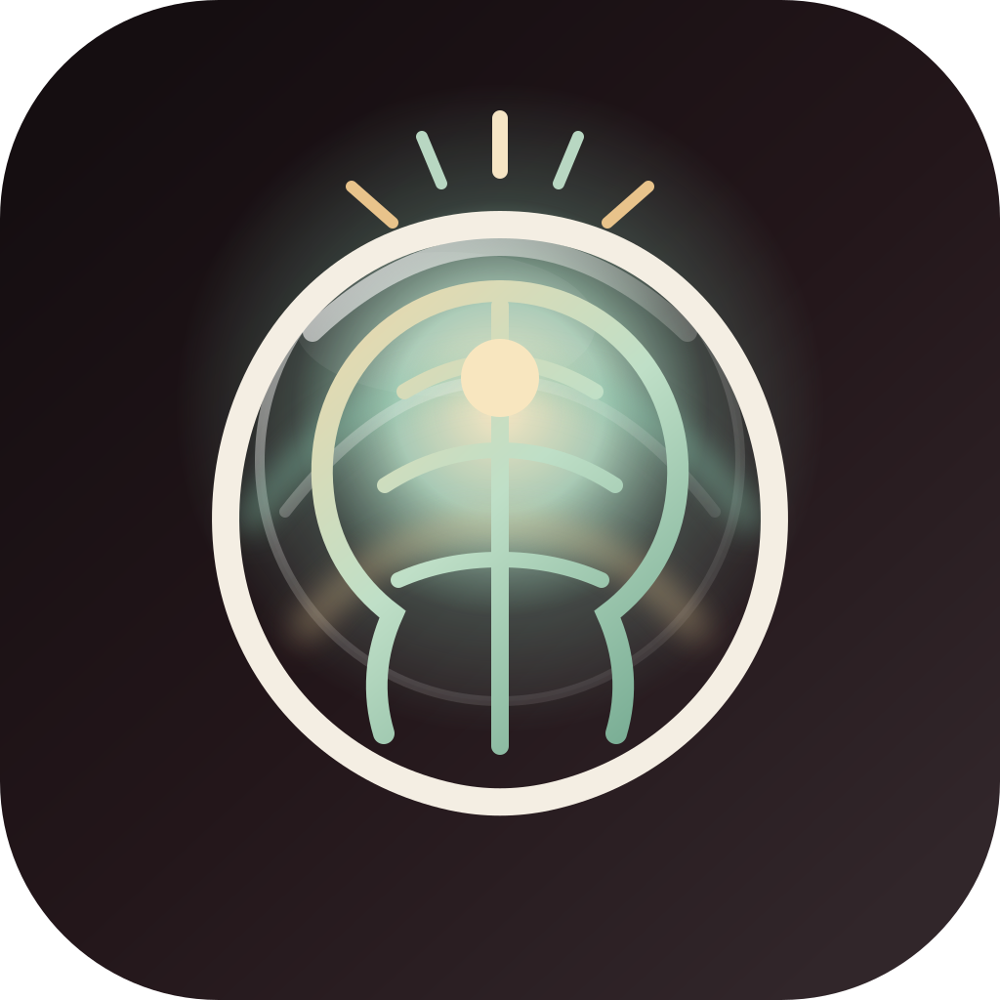

01. Minimal Vector Mark
Most restrained and app-icon friendly. Strong central glow, simple brain geometry, premium software feel.
Each concept keeps a visible brain shape with an enlightenment cue, but pushes the identity in a different direction. The bottom row isolates three Apple Liquid Glass-inspired treatments for the selected symbolic emblem so you can compare material direction without changing the core symbol.

Most restrained and app-icon friendly. Strong central glow, simple brain geometry, premium software feel.

Selected direction. Updated with an ember, jade, and champagne palette so it feels calmer, richer, and less like a default startup logo.

Sharper and more performance-oriented. Keeps the enlightened brain idea but adds a stronger tech and elite-focus tone.

Most spiritual version. Refractive arcs and translucent highlights sit around the symbol, while the brain remains the primary read.

Strongest Apple Liquid Glass interpretation. The mark sits inside a glass orb, so it feels closer to an app icon object.

Final selection. A restrained glass vessel plus lighter aura accents keeps the logo readable while adding material depth.
Canonical final asset, currently mapped to the selected `02C` hybrid Liquid Glass direction.
Files are in FocusFlow/Brand/LogoConcepts.